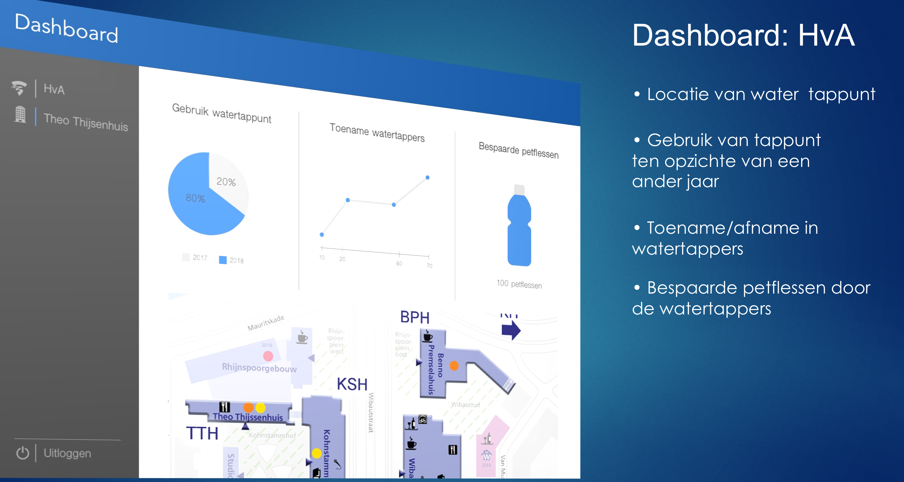
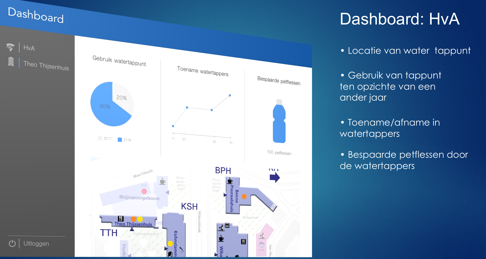

Join the Hype
Een concept waarmee aanschaf van plastic flessen afneemt, zodat de plastic problematiek verbeterd. De oplossing sluit aan bij bestaande watertappunten van 'Join the Pipe' op het terrein van de Hogeschool van Amsterdam.
Join the Hype laat aanschaf van petflessen afnemen door een terugkomende activiteit waarmee men bewust wordt van de plastic impact op het milieu. Het concept is een silicone bandje met NFC om jouw waterfles. Jouw activiteit omtrent het hervullen van water wordt in het vervolg geregistreerd.
Het bandje staat in connectie met jouw telefoon waar visueel wordt weergegeven hoeveel flessen je al bespaard heb door te hervullen inplaats van een nieuwe (pet)fles te kopen.
 
